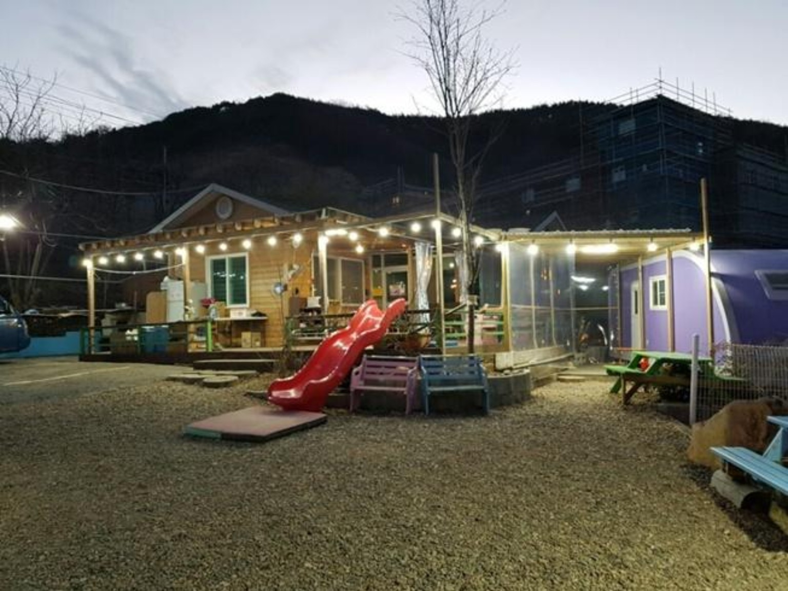
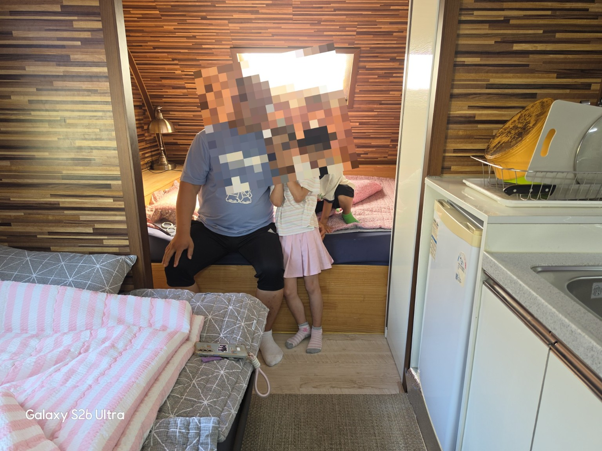
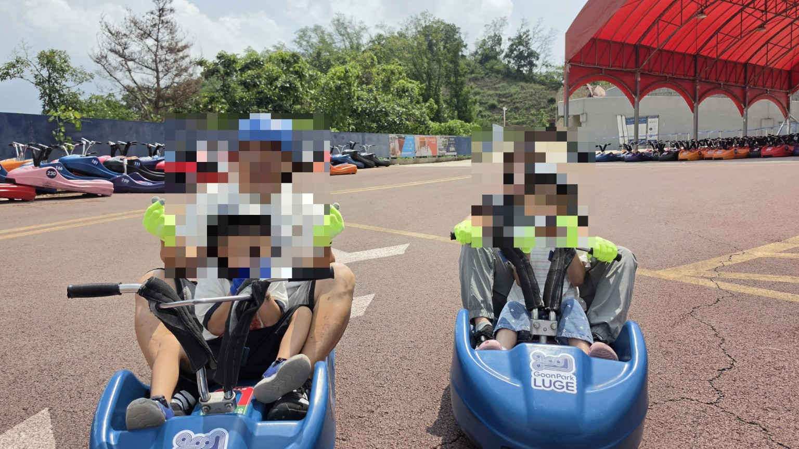
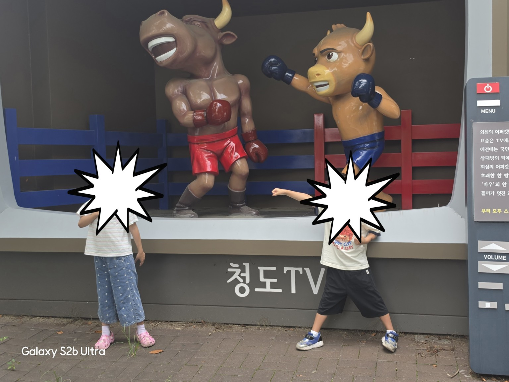

여행 · 청도
청도 여행 – 카라반 펜션, 루지, 소싸움 체험
가족과 함께 청도에서 특별한 시간을 보냈습니다. 숙소에서 편하게 쉬고, 루지 체험으로 신나게 즐긴 뒤 청도의 대표적인 볼거리도 둘러봤어요.

카라반 펜션에서 편안하게
여행의 시작은 카라반 펜션이었습니다. 야외 공간이 넉넉하고 조명이 켜진 저녁 분위기도 편안했어요. 실내에는 침구와 간단한 주방 공간이 있어 가족끼리 머물기 좋았습니다.

가장 신났던 루지 체험
청도 여행에서 기억에 가장 남는 체험 중 하나는 루지였습니다. 출발 전에는 조금 긴장되기도 했지만 직접 타보니 속도감이 재미있고, 가족과 함께 웃으며 즐기기 좋은 시간이었어요.

청도의 소싸움 문화도 구경
청도 하면 떠오르는 소싸움 관련 볼거리도 둘러봤습니다. 현장에 있는 조형물과 전시를 보면서 청도만의 독특한 문화를 가까이에서 접할 수 있었어요.

여행을 마치며
숙소에서의 휴식, 루지의 즐거움, 청도만의 볼거리까지 한 번에 경험할 수 있었던 여행이었습니다. 사진을 다시 보니 그날의 즐거운 분위기가 그대로 떠오르네요. 다음에도 가족과 함께 천천히 둘러보는 여행을 또 떠나고 싶습니다.